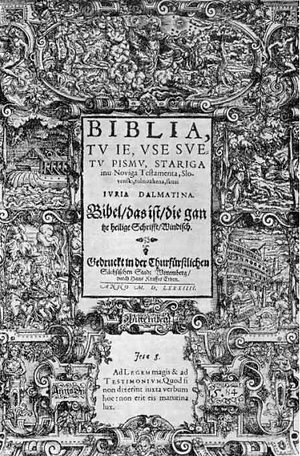
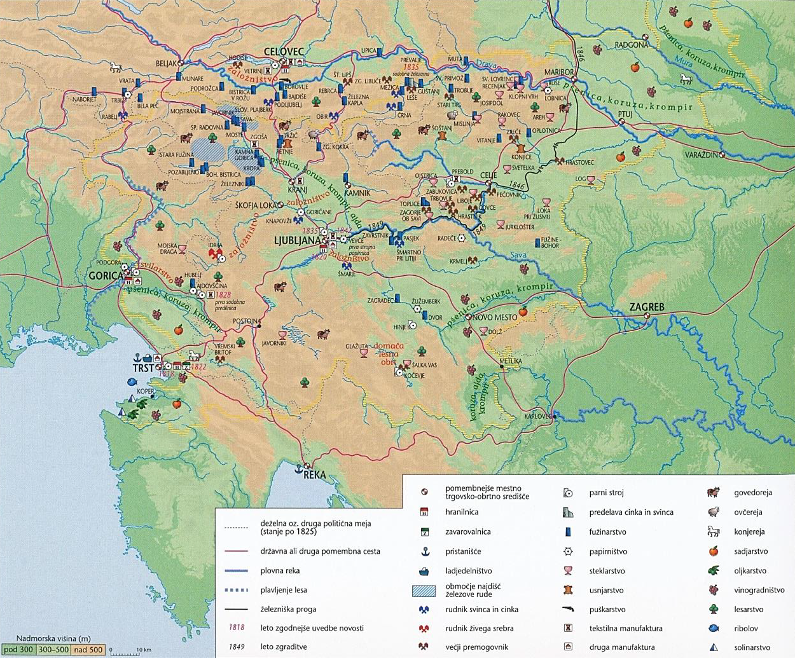
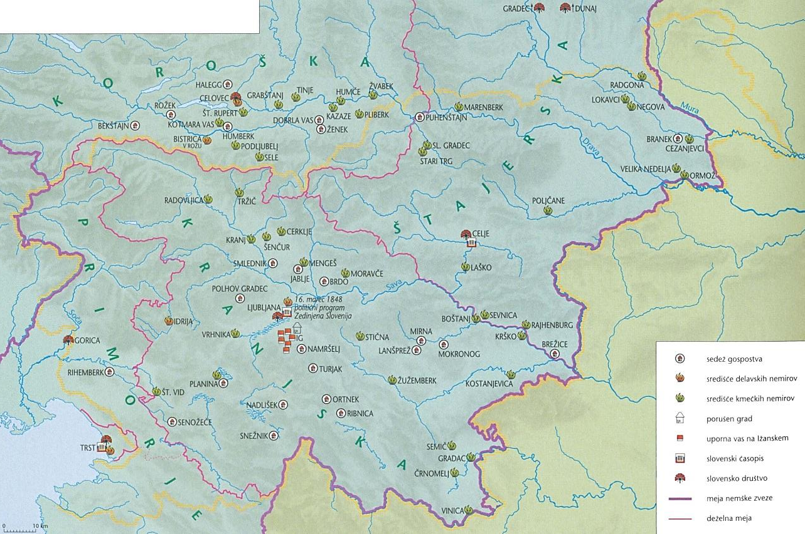

Razvoj zgodovinskih dežel in Slovenci
1
Po oblikovanju dežel v srednjem veku so večini
slovenskega ozemlja vladali Habsburžani, naši predniki
pa so živeli v različnih habsburških deželah.
Povežite srednjeveška mesta in dežele tako, da na črto v levem stolpcu vpišete ustrezno črko iz desnega stolpca. Pri reševanju si pomagajte s sliko 8 v barvni prilogi. 3 točke
Povežite srednjeveška mesta in dežele tako, da na črto v levem stolpcu vpišete ustrezno črko iz desnega stolpca. Pri reševanju si pomagajte s sliko 8 v barvni prilogi. 3 točke

| Mesto | Dežela |
|---|---|
| Radovljica | B – Kranjska |
| Ptuj | C – Štajerska |
| Tolmin | A – Goriška |
| Brežice | C – Štajerska |
| Krško | B – Kranjska |
| Višnja Gora | B – Kranjska |
Za 6 pravilnih 3 t. · za 5–4 → 2 t. · za 3–2 → 1 t.
2
Plemstvo je imelo primarno vojaške in upravne
dolžnosti, a se je rado tudi zabavalo. Za to so, med
drugim, skrbeli potujoči vitezi, ki so jih zato tudi
pogosto upodabljali na freskah ali v kodeksih. Pri
reševanju si pomagajte z besedilom.
3 točke
Vitez je pred visokorodno damo – frouwe s klapouhim
kužkom v naročju, kar je bilo tedaj v modi, pokleknil na
koleno in se ji med izročanjem pergamentnega lista, na
katerem lahko slutimo verzificirano ljubezensko izpoved,
proseče zazrl v oči.
Vir: Stopar, I., 2005: Svet viteštva, str. 101.
Viharnik. Ljubljana
2.1 Kako so
imenovali takšne potujoče viteze?
Rešitev (ena od)
- viteški pevci
- minezengerji
- trubadurji
2.2 S katerimi
zvrstmi umetnosti so zabavali dvorjane?
Rešitev (dve od)
- pesništvo / lirika
- pripovedništvo
- glasba
- petje
2.3 Pojasnite, kako
se je izkazovala mecenska vloga plemstva.
Rešitev (ena od)
- Podpirali so gradnjo cerkva / samostanov.
- Podpirali so umetnike / slikarje / kiparje.
3
V fevdalno urejeni družbi je moral deželni knez pri
vladanju upoštevati privilegije plemstva.
2 točki
Glede podeljevanja fevdov imajo pravico, da jih
podeljujemo sinovom in hčeram, in najstarejši v vsaki
rodbini naj fevd sprejme in prenaša /…/. Če kdo od njih
umre brez dedičev, naj njegovo dediščino, bodisi fevd
bodisi alod, dedujejo drugi bližji sorodniki v rodbini
in mi jim te dediščine ne smemo brez plačila odvzeti, če
so jo razdelili med seboj.
Vir: Nared, A., 2009: Dežela – knez – stanovi, str.
326. Založba ZRC, ZRC SAZU. Ljubljana
3.1 S pomočjo
besedila pojasnite, kako se je na našem ozemlju
utrdila fevdalna razdrobljenost.
Rešitev (ena od)
- Posestvo / fevd se je dedoval v isti rodbini.
- Tudi če pokojnik ni imel neposrednega dediča, posest ni smela biti odvzeta rodbini.
- Senior ni imel neposredne oblasti nad fevdom, ki ga je podelil vazalu.
3.2 Pojasnite, kako
se je predaja oblasti deželnega kneza na Koroškem
razlikovala od predaje oblasti v drugih slovenskih
deželah.
Rešitev (ena od)
- Ustoličevanje koroških vojvod se je naslanjalo na tradicijo ustoličevanja v Karantaniji.
- Del obreda je potekal v slovenskem jeziku.
4
Ko so v 16. stoletju Habsburžani zavladali skorajda na
celotnem današnjem slovenskem ozemlju, so začeli
pogosteje sklicevati deželne stanove.
2 točki
4.1 Katera zunanja
nevarnost je vladarje silila v pogostejše
sklicevanje deželnih stanov?
Rešitev (ena od)
- turški vpadi
- vojne z Beneško republiko
4.2 Katere ukrepe
glede obrambe dežel so sprejeli na zasedanjih
deželnih stanov?
Rešitev (ena od)
- Potrjevali so davke za obrambne potrebe.
- Sprejemali so ukrepe za vojaško / protiturško obrambo.
- Dežele so začele sodelovati pri obrambnih nalogah / pri delovanju Vojne krajine.
5
Državna organizacija se je od 15. stoletja
modernizirala, kar pa ni zagotavljalo vsem stanovom
enake zaščite življenja in premoženja.
Kandidat obkroži: A – PLEMSTVO ali B – KMETJE. V obliki krajšega razmišljanja opiše: kako so izvedeli za bližajoči se prihod Turkov, obrambne naloge, objekte zaščite, odnos nasprotnega stanu do teh objektov in posledice turških vpadov. 5 točk
Kandidat obkroži: A – PLEMSTVO ali B – KMETJE. V obliki krajšega razmišljanja opiše: kako so izvedeli za bližajoči se prihod Turkov, obrambne naloge, objekte zaščite, odnos nasprotnega stanu do teh objektov in posledice turških vpadov. 5 točk
Medtem ko je bila naklonjenost cesarja oziroma deželnega
kneza do gradnje taborov celo obdobje praviloma
pozitivna /…/, pa je bila naklonjenost deželnega
plemstva do obstoja in gradnje taborov različna. /.../
Po kmečkem uporu leta 1515 so stanovi še isto leto
večkrat predlagali cesarju, da določi posebno komisijo,
ki naj obide tabore in dá za obrambo nesposobne podreti,
kmetje pa naj bi se umaknili ob turškem vpadu z žitom in
imetjem v gradove in mesta.
Vir: Simoniti, V., 1991: Vojaška organizacija na
Slovenskem v 16. stoletju, str. 201. Slovenska
matica. Ljubljana
Rešitve za oba primera (A – PLEMSTVO in B – KMETJE):
| Kriterij (1 t.) | A – PLEMSTVO | B – KMETJE |
|---|---|---|
| Opozorilo | Signalne naprave / izstrelišče; na hribih so prižigali grmade. | Signalne naprave / izstrelišče / zvonjenje zvonov; grmade na hribih. |
| Obrambna naloga | Nosili so glavno vojaško / obrambno breme; prispevati ustrezno število vojakov / konjenikov in pešcev. | Imeli so obstransko / posredno obrambno vlogo; bili so (lahko) pomožna vojna sila / črna vojska. |
| Objekti zaščite | gradovi | tabori |
| Odnos nasprotnega stanu | Morali so graditi gradove, a v njih niso dobili zaščite; kljub davčnemu bremenu niso imeli koristi. | Nasprotovali so gradnji / utrjevanju taborov; bali so se, da bi jih kmetje uporabili za upore. |
| Posledice | Ker so se Turki ogibali gradovom, niso trpeli večjih posledic neposredno; uničena je bila njihova zemljiška posest / objekti zunaj gradov. | V ujetništvo je bilo odpeljano veliko ljudi; veliko jih je bilo ubitih; uničena / izropana so bila bivališča; uničen je bil pridelek. |
6
Naseljevanje uskokov je bila ena izmed demografskih
sprememb, ki so jih povzročili turški vpadi. Pri
reševanju si pomagajte s sliko 8 v barvni prilogi.
3 točke
6.1 Navedite pet
območij, na katera so naselili uskoke.
Rešitev (pet od)
- Žumberk / Žumberak
- Bela krajina
- okolica Brežic / Krško polje
- okolica Postojne
- okolica Senožeč
- okolica Gorice
- okolica Vipave / Vipavska dolina
- zaledje / okolica Trsta
- okolica Ptuja / Ptujsko polje
- okolica Veržeja
- Kras
6.2 Zakaj so bili
naseljeni prav na ta območja?
Rešitev (ena od)
- Šlo je za opustela območja / pustote.
- Področja ob meji so najbolj trpela ob turških vpadih.
- S teh območij se je (preostalo) domače prebivalstvo izselilo v notranjost dežele.
6.3 Opišite razliko
med uskoki in domačim slovenskim prebivalstvom.
Rešitev (ena od)
- Domačini so bili katoliške vere, uskoki pa pravoslavne.
- Domačini so govorili slovensko, uskoki pa hrvaško / srbsko.
- Uskoki so opravljali vojaško službo, domači kmetje pa (praviloma) ne.
7
Naraščanje bremen, slabe letine in spori z zemljiškimi
gospodi so kmete vodili v kmečke upore.
Povežite kmečke upore in njihove značilnosti. 2 točki
Povežite kmečke upore in njihove značilnosti. 2 točki
| Kmečki upor | Značilnost |
|---|---|
| Koroški kmečki upor 1478 | C – z uporniki so obračunali Turki |
| Vseslovenski kmečki upor 1515 | D – prvič natisnjene slovenske besede |
| Hrvaško-slovenski kmečki upor 1573 | A – najbolje organiziran kmečki upor |
| Tolminski kmečki upor 1713 | B – kmetom so se pridružili rudarji iz Idrije |
Za 4 pravilne 2 t. · za 3–2 → 1 t.
8
Kmečki uporniki so bili po porazu kaznovani z dodatnimi
davki, mučenjem in javnimi usmrtitvami vodij.
Zakaj se kmečki uporniki v boju niso mogli kosati z nasprotniki? 1 točka
Zakaj se kmečki uporniki v boju niso mogli kosati z nasprotniki? 1 točka
Rešitev (dve od)
- Kmetje so bili slabše oboroženi.
- Kmetje niso obvladali vojaške taktike / strategije.
- Kmetje niso bili izšolani za vojake.
- Kmetje so bili slabo organizirani.
9
Humanizem je iz renesančne Italije z zamudo segel tudi
na slovensko ozemlje.
2 točki
Težko bi si bilo pravzaprav misliti, da bi bili Celjani
ostali povsem nedotaknjeni vsaj od nekaterih prvin
humanizma /…/. Zgoraj smo omenili kot nadaljnje
potencialno mesto za širjenje humanistične misli
škofovske dvore. /…/. Prva škofija na naših tleh je bila
iz politično-teritorialnih razlogov habsburške politične
strategije ustanovljena v Ljubljani leta 1461.
Vir: Simoniti, P., 2007: Med humanisti in starimi
knjigami, str. 9–11. Slovenska matica.
Ljubljana
9.1 Glede na
besedilo navedite, kje so se pojavili vplivi
humanizma na Slovenskem.
Rešitev (ena od)
- knežji dvor / dvor Celjskih / Celje
- škofijski dvorec / škofovski dvorec / Ljubljanska škofija / Ljubljana
9.2 Zakaj so bile
zunaj območja današnje Slovenije danosti za
delovanje humanističnih mislecev boljše?
Rešitev (ena od)
- Na Slovenskem tedaj še ni bilo nobene znanstvene ustanove / univerze.
- V tujini so bile znanstvene ustanove / univerze.
- Na Slovenskem ni bilo še nobene tiskarne.
- V tujini so bile tiskarne.
10
Humanizem je močno vplival na širjenje protestantizma.
Pri reševanju si pomagajte z besedilom.
2 točki
Imenovani tržaški škof [Peter Bonomo] me je vzgajal,
učil in pošteno navajal k popolni pobožnosti; na svojem
dvoru je meni in drugim razlagal poleg Vergila tudi
Erazmove Parafraze in Calvinove Institutiones v laškem,
nemškem in slovenskem jeziku. /…/ Zgoraj omenjeni gospod
Vergerij mi je pisal /…/ želeč od mene izvedeti, če bi
si upal prevesti biblijo v slovenski in hrvatski jezik.
Primož Trubar, 1557; Vir: Rupel, M., 1966:
Slovenski protestantski pisci, str. 75. DZS.
Ljubljana
10.1 Kakšen odnos so
imeli humanisti do slovenskega jezika?
Rešitev (ena od)
- Upoštevali so ga enakopravno z drugimi jeziki (ki so se govorili na tem ozemlju).
- Menili so, da bi lahko prevedli Biblijo tudi v slovenski jezik.
- Niso ga obravnavali kot manjvrednega.
10.2 Kako se je na
pobude humanističnih učiteljev odzval Primož Trubar?
Rešitev (ena od)
- Postal je pisec prvih knjig v slovenščini.
- Lotil se je prevoda (dela) Biblije.
- Začel je pisati v slovenskem jeziku.
11
Protestantizem je sprožil tiskanje knjig v slovenskem
jeziku.
Na črto pod vsako sliko (slika 3 in slika 4) vpišite ime in priimek avtorja knjige ter pojasnite pomen knjig. 2 točki
Na črto pod vsako sliko (slika 3 in slika 4) vpišite ime in priimek avtorja knjige ter pojasnite pomen knjig. 2 točki


11.1 Avtor knjige na
sliki 3 in slika 4
Rešitev
Slika 3: Jurij Dalmatin (prevod
Biblije) | Slika 4:
Adam Bohorič (Zimske urice –
prva slovnica)
11.2 Zakaj sta ravno
ti knjigi zelo pomembni za slovenski kulturni
razvoj?
Rešitev (ena od)
- Slovenski jezik je dobil prvo (znanstveno utemeljeno) slovnico.
- Protestantizem štejemo za začetek slovenskega knjižnega jezika.
- Širilo se je spoznanje, da se slovenski jezik govori v več deželah.
- S prvim prevodom Biblije v narodni jezik se (običajno) začenja razvoj knjižnega jezika.
12
Protireformacija in katoliška obnova sta ob koncu 16.
stoletja zavrli razvoj protestantizma na
Slovenskem.
2 točki
12.1 S katerimi
ukrepi je protireformacija zavrla razvoj slovenske
knjižne produkcije?
Rešitev (dve od)
- prepoved (Mandelčeve) tiskarne (v Ljubljani)
- prepoved protestantskih šol
- sežiganje protestantskih knjig
- izgon protestantskega meščanstva / plemstva je povzročal odtok kapitala / knjig
12.2 Pojasnite,
zakaj se je na Slovenskem protestantizem najmočneje
usidral v Prekmurju.
Rešitev (ena od)
- Prekmurje je bilo pod Ogrsko, kjer ni bilo tako ostrih protireformacijskih ukrepov.
- Zaradi turške nevarnosti ni bilo možno izvajati protireformacije.
- Velik del plemstva je spodbujal / podpiral protestantizem.
13
Marija Terezija se je po prevzemu oblasti lotila
obsežnih gospodarskih reform. Pri reševanju si pomagajte
s sliko 9 v barvni prilogi.
3 točke
»Njeno veličanstvo želi delavcem vseh narodnosti, ki
dobro obvladajo svojo obrt, dati vse mogoče olajšave,«
je pisalo v enem od odlokov iz leta 1749. To je bil prvi
udarec proti cehom, ki so se dopolnjevali iz lastnih
krogov in niso hoteli sprejemati domačih novincev, kaj
šele izučenih mož iz tujine.
Vir: Herre, F., 2015: Marija Terezija: velika
Habsburžanka, str. 132. Cankarjeva založba.
Ljubljana

13.1 Pojasnite,
kakšne posledice so imele gospodarske reforme za
razvoj obrti.
Rešitev (dve od)
- Cehi so dobili konkurenco / niso več uživali dotedanjih privilegijev.
- Spodbujali so razvoj manufaktur.
- V obrtnih delavnicah so zaposlovali tudi manj usposobljene.
- Prepovedali so uvoz surovin (ki so jih lahko pridobili doma).
- Ustanavljali so obrate / manufakture za proizvodnjo sukna / svile / papirja / stekla / usnja.
13.2 Navedite
najpomembnejši državni gospodarski obrat na
Slovenskem v 18. stoletju.
Rešitev
Rudnik živega srebra (v Idriji)
13.3 Do katerih dveh
mest je vodila glavna trgovska pot z Dunaja čez
slovensko ozemlje?
Rešitev
Trst in
Reka / Rijeka
14
Agrarne reforme Marije Terezije so spremenile podobo
podeželja. Pri reševanju si pomagajte s sliko 9 v barvni
prilogi.
Obkrožite črke pred tremi pravilnimi trditvami. 3 točke
Obkrožite črke pred tremi pravilnimi trditvami. 3 točke
A – Na Koroškem okoli Mežice se je uveljavila
govedoreja.
B – Na podeželju so uvajali hlevsko živinorejo.
C – Glavni prodajni artikel Haloz in Slovenskih
goric je bilo vino.
D – Srenjsko zemljo so začeli izkoriščati kot skupno
zadružno posest.
E – Z izsuševanjem Ljubljanskega barja so
pridobivali nove obdelovalne površine.
F – Zaradi železniških povezav je nazadovala
konjereja.
Za 6 pravilnih 3 t. · za 5–4 → 2 t. · za 3–2 → 1 t.
Slovensko nacionalno preoblikovanje
15
Marija Terezija je menila, da bodo gospodarske reforme
uspešne le, če bodo primerno izobrazili večinsko kmečko
prebivalstvo. Pri reševanju si pomagajte z
besedilom.
3 točke
Med razlogi vsega tega ni najmanjši pri podeželskem
ljudstvu tako zelo razširjeno neznanje branja in
pisanja; v tem je tako neizkušeno, da zna razen redkih
študentov, duhovščine, nekaterih meščanov v mestih in v
grajskih pisarnah, v vsej vojvodini komaj sto oseb brati
in pisati.
Blaž Kumerdej, 1772; Vir: Schmidt, V., 1988:
Zgodovina šolstva in pedagogike na Slovenskem I.,
str. 169. Cankarjeva založba. Ljubljana
15.1 Katero dejstvo
je kot vzrok za zaostalost podeželja označil
Kumerdej?
Rešitev (ena od)
- »razširjeno neznanje branja in pisanja«
- (visoka) nepismenost
15.2 Kako bi lahko
po Kumerdejevem mnenju odpravili to težavo?
Rešitev (ena od)
- z uvedbo obveznega šolanja
- s šolanjem v deželnem / kranjskem jeziku
15.3 Pojasnite,
kakšna je bila odločitev Marije Terezije pri
reševanju te problematike.
Rešitev (ena od)
- Marija Terezija je (leta 1774) razglasila / uzakonila splošno šolsko obveznost.
- Predpisala je šolanje obeh spolov / dečkov in deklic.
16
Da bi uveljavili večjo jezikovno enakopravnost v
državi, so izobraženci začeli objavljati novitete o
»kranjskem« jeziku in slovanskem prebivalstvu.
Povežite avtorje in njihovo delo. 2 točki
Povežite avtorje in njihovo delo. 2 točki
| Avtor | Delo |
|---|---|
| Jurij Japelj | D – prvi katoliški prevod Biblije v slovenščino |
| Anton T. Linhart | A – prva nacionalno zasnovana zgodovina |
| Valentin Vodnik | B – prvi slovenski časopis Lublanske novice |
| Jernej Kopitar | C – prva slovnica slovenskega jezika po Bohoriču |
Za 4 pravilne 2 t. · za 3–2 → 1 t.
17
Medtem ko se je že uveljavil pojem slovenski jezik, so
se jezikoslovci še vedno razhajali glede črkopisa.
2 točki

17.1 S pomočjo slike
5 pojasnite, v čem so se novi črkopisi razlikovali
od Pohlinovega in Vodnikovega, ki sta še izhajala iz
bohoričice.
Rešitev (ena od)
- Za šumnike / č, š, ž so poskusili uveljaviti načelo ene črke za en glas.
- Odstopili so od kombiniranih znakov zh, ch, sh za šumnike / č, š, ž.
17.2 Zakaj sta
Matija Čop in France Prešeren zavračala pobude za
različne črkopise?
Rešitev (ena od)
- Ker so različni črkopisi delali zmedo.
- Ker so bili (novi) črkopisi omejeni na dežele.
- Ker bi z uveljavitvijo več črkopisov razbijali enotnost slovenskega jezikovnega razvoja.
18
Zlasti med štajerskimi Slovenci se je krepilo gibanje,
ki je zagovarjalo tesnejše, tudi jezikovno povezovanje
južnih Slovanov.
2 točki
18.1 Kako se imenuje
gibanje za tesnejše kulturno povezovanje južnih
Slovanov?
Rešitev
Ilirizem
18.2 Zakaj so tudi
nekateri slovenski izobraženci zagovarjali takšno
povezovanje?
Rešitev (ena od)
- Menili so, da je Slovencev premalo za samostojen kulturni razvoj.
- V povezovanju v večjo skupnost so videli večje možnosti kulturnega razvoja.
19
V predmarčni dobi sta začela v slovenskem jeziku
izhajati dva pomembna časopisa, Krajnska čbelica ter
Kmetijske in rokodelske novice. Pri reševanju si
pomagajte s sliko 6 ali 7.
Kandidat obkroži: A – KRAJNSKA ČBELICA ali B – KMETIJSKE IN ROKODELSKE NOVICE. 4 točke
Kandidat obkroži: A – KRAJNSKA ČBELICA ali B – KMETIJSKE IN ROKODELSKE NOVICE. 4 točke


Rešitve za oba primera (A – Krajnska čbelica in B –
Kmetijske in rokodelske novice):
| Kriterij (1 t.) | A – KRAJNSKA ČBELICA | B – KMETIJSKE IN ROKODELSKE NOVICE |
|---|---|---|
| Urednik (19.1) | (Miha) Kastelic | (Janez) Bleiweis |
| Krog bralcev (19.2) | bolj zahtevnim / bolj izobraženim bralcem | kmečkemu prebivalstvu / obrtnikom / manj zahtevnim bralcem |
| Nov črkopis (19.3) | (Najprej so objavljali v bohoričici), nato so uporabljali gajico; z uporabo gajice so vplivali na uveljavitev tega črkopisa v slovenskem jeziku. | |
| Pomen (19.4) | Nasprotovali so ilirizmu; zagovarjali so samostojen slovenski narodni razvoj; Prešernova dela so uveljavila slovensko literaturo. | Utrjevali so slovensko narodno identiteto; začeli so uporabljati ime Slovenija; širil je uporabo pojmov Slovenec in slovenski jezik; imel je povezovalno vlogo. |
20
Slovensko narodno gibanje je bilo do leta 1848 zaradi
počasnega uveljavljanja narodne zavesti omejeno na ozek
krog domoljubov.
Obkrožite črko pred pravilno trditvijo. 1 točka
Obkrožite črko pred pravilno trditvijo. 1 točka
A – Hitrejše uveljavljanje narodne zavesti je
zavirala močna deželna identiteta.
B – Osrednje slovenske kulturne ustanove niso
delovale le v slovenskem jeziku.
C – Šolstvo na Slovenskem je bilo podrejeno idejnim
načelom različnih političnih strank.
21
Po koncu napoleonskih vojn leta 1815 je bilo Avstrijsko
cesarstvo gospodarsko izčrpano, zaradi slabih letin pa
se je spopadalo tudi z veliko lakoto. Pri reševanju si
pomagajte z besedilom in s sliko 10 v barvni
prilogi.
3 točke
Štiri velike in očitne stopnje, ktere so kmetovavci v
poslednjih 70 letih v kmetijstvu naprej storili, so
tele: perva, de so začeli okoli 1770. leta pogostoma
deteljo sejati in živino v hlevih rediti; druga, de so
jeli korun (krompir) saditi; tretja, da so jeli setev
žit in druzih sadežev umno vrstiti in primerno
premenovati; četrta pa, de so jeli za pomnoženje gnoja
bolj skrbeti /…/
Kmetijske in rokodelske novice, 17. marca 1847;
Vir: Cvirn, J., Studen, A., 2010: Zgodovina 3, str.
150. DZS. Ljubljana

21.1 Katera kultura
se je uveljavila v prehrani po lakoti 1815–1817?
Rešitev (ena od)
krompir / koruza
21.2 Navedite
novosti, ki so bile vpeljane v poljedelstvu.
Rešitev (dve od)
- uvajanje novih kultur
- večje kolobarjenje rastlin / podaljševanje kolobarjenja na več let
- uvajanje gnojenja njivskih površin
- uvajanje strniščnih pridelkov
- povečevanje obsega obdelovalne zemlje / zmanjševal se je obseg zemlje v prahi
- namakanje površin / senožeti
21.3 S katerimi
nekmetijskimi dejavnostmi je kmečko prebivalstvo
dodatno zaslužilo?
Rešitev (dve od)
- založništvo
- furmanstvo / tovorništvo / prevozništvo
- domača (lesna) obrt
- splavarstvo / (s)plavljenje lesa
- oglarstvo
- kmečka trgovina
22
Gospodarski razvoj je v prvi polovici 19. stoletja
spodbudila največja naložba v državi, od katere so imeli
korist okoliški kraji. Pri reševanju si pomagajte z
besedilom in s sliko 10 v barvni prilogi.
2 točki
Preden so začeli graditi odsek med Celjem in Ljubljano,
so mnogo razmišljali o tem, v kateri smeri naj grade
/…/. V hrastniški, trboveljski in zagorski dolini je
postalo vse živo. Prišlo je na delo nad 3000 ljudi. /…/
Kmetje iz vseh bližnjih naselij so imeli mnogo vožnje.
Zaslužili so gostilničarji in vsi obrtniki so bili
preobloženi z delom.
Vir: Orožen, J., 1958: Zgodovina Trbovelj,
Hrastnika in Dola I, str. 288. Občinski ljudski
odbor. Trbovlje
22.1 Katero pomembno
državno gradnjo opisuje besedilo?
Rešitev
(Južna) železnica
22.2 Pojasnite,
kakšne so bile gospodarske koristi za Hrastnik,
Trbovlje in Zagorje.
Rešitev (dve od)
- Zaposlitev je dobilo veliko delavcev.
- Obrtniki so dobili veliko naročil.
- Kmetje so oskrbovali veliko ljudi / prepeljali veliko tovora.
- Razmahnilo se je premogovništvo.
- V mestih so postavili nove tovarne / steklarne / obrate za predelavo kovin.
23
V prvi polovici 19. stoletja je industrializacija
zajela tudi slovensko ozemlje.
Povežite kraje in tovarne. 2 točki
Povežite kraje in tovarne. 2 točki
| Kraj | Tovarna / obrat |
|---|---|
| Ljubljana | C – rafinerija sladkorja |
| Prebold | A – bombažna predilnica |
| Vevče | B – papirnica |
| Prevalje | D – železarna |
Za 4 pravilne 2 t. · za 3–2 → 1 t.
24
Val revolucij leta 1848 je zajel tudi Avstrijsko
cesarstvo in se z Dunaja širil po vsej državi. Svoje
zahteve sta izoblikovala tako meščanstvo kot kmečko
prebivalstvo.
Razložite razliko med zahtevami meščanstva in kmečkega prebivalstva. 1 točka
Razložite razliko med zahtevami meščanstva in kmečkega prebivalstva. 1 točka
Rešitev (ena od)
- Meščanstvo je na prvo mesto postavilo zahtevo za politične svoboščine / svobodo tiska in združevanja, kmečko prebivalstvo pa odpravo fevdalnih odnosov.
- Meščanstvo je oblikovalo nacionalni program, za kmečko prebivalstvo to ni bilo poglavitno.
25
Revolucionarno dogajanje leta 1848 je razburkalo tudi
slovenski politični prostor. Pri reševanju si pomagajte
s sliko 11 v barvni prilogi.
Obkrožite črke pred tremi pravilnimi trditvami. 3 točke
Obkrožite črke pred tremi pravilnimi trditvami. 3 točke

A – Prvo društvo z imenom Slovenija je bilo
ustanovljeno na Dunaju.
B – Ljubljana je postala središče boja za
uresničitev slovenskega narodnega programa.
C – Slovenci so prvič odšli na volišča na volitvah
za avstrijski parlament na Dunaju.
D – Slovenke so se prvič politično vključile ob
podpisovanju peticij za Zedinjeno Slovenijo.
E – Največji upor delavcev je bil stavkovni val
železničarjev.
F – Največji upor kmetov je bil v vaseh blizu
Ljubljane.
Za 6 pravilnih 3 t. · za 5–4 → 2 t. · za 3–2 → 1 t.